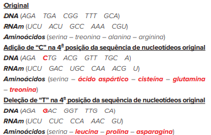
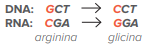
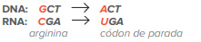

As mutações genéticas são alterações na estrutura ou na sequência do DNA.
[...] Durante o curso da evolução, o fluxo constante de nova variação de nucleotídeos tem assegurado um alto grau de diversidade genética e individualidade, e este tema se estende através de todos os campos da genética médica e humana. A diversidade genética pode manifestar-se como diferenças na organização do genoma, como alterações de nucleotídeos na sequência do genoma, como variações no número de cópias de grandes segmentos de DNA genômico, como alterações na estrutura ou na quantidade de proteínas encontradas em vários tecidos, ou como qualquer um destes no contexto de doenças clínicas.
GÓMEZ, Maria Nélida González de; MACHADO, Rejane. A ciência invisível: o papel dos relatórios e as questões de acesso à informação científica. Revista de Ciência da Informação. Disponível em: (https://ridi.ibict.br/bitstream/123456789/119/3/GomezDataGramaZero2007.pdf). Acesso em: 20 abr. 2020.
Todos os seres vivos podem passar por mutações genéticas. Em meados de 1900, o botânico Hugo de Vries (1848-1935) desenvolveu a “teoria das mutações”, constatando que novas espécies de plantas poderiam ser originadas, repentinamente, a partir de espécies existentes. Em suas pesquisas, de Vries redescobriu os trabalhos de Mendel (1822-1884) e retomou os estudos genéticos no século XX. Atualmente, as bases moleculares das mutações são reconhecidas pelos cientistas.
- O que se entende por mutação?
- Em qual(is) processo(s) celular(es) as mutações podem ocorrer?
- Qual é a importância das mutações para as espécies?
Neste capítulo serão abordadas as habilidades EM13CNT205 , EM13CNT303 e EM13CNT304 .
Natureza das mutações
Mutações podem ser definidas como quaisquer alterações na sequência de nucleotídeos ou na estrutura molecular do material genético. As causas para sua ocorrência podem ser naturais ou espontâneas, ou elas podem ser induzidas por
agentes mutagênicos, como: radiação, raios UV (ultravioleta) e alguns tipos de substâncias químicas, como benzeno e tolueno.
Algumas mutações genéticas podem ser neutras, sem que ocorram mudanças na estrutura ou função
de determinado produto gênico. Se as mutações ocorrerem nas células germinativas, produtoras de gametas, os efeitos poderão ser observados nas gerações seguintes, já que o zigoto contendo a mutação dará origem a todas as células
do indivíduo. Mas, quando as mutações acontecem em células somáticas, os efeitos se restringem às células mutadas do organismo.
Em geral, as mutações podem ser classificadas em mutações cromossômicas e mutações gênicas.
Mutações cromossômicas
As mutações cromossômicas afetam a quantidade ou a forma dos cromossomos e podem ser diferenciadas em numéricas ou estruturais.
Mutações cromossômicas numéricas (ou genômicas)
Essas mutações afetam a quantidade de cromossomos presentes nas células. Geralmente, esse tipo de mutação decorre de problemas durante a segregação dos cromossomos na meiose, gerando gametas com números superiores ou inferiores
de cromossomos. Outras possibilidades são a fecundação do óvulo por dois espermatozoides (dispermia) e problemas na mitose embrionária.
Existem duas grandes variedades de mutações numéricas: a euploidia e a aneuploidia.
Euploidia
As euploidias são caracterizadas pela ocorrência de alterações em todo o conjunto cromossômico das células, desencadeando uma mudança em sua ploidia; por exemplo, as células diploides (2n) se dividem e geram uma célula-filha haploide
(n). Essa condição é denominada monoploidia (2n – n = n). Assim, todos os cromossomos serão afetados.
Na maior parte das espécies, as euploidias geralmente originam indivíduos que não completam o seu desenvolvimento. Em
outros casos, os indivíduos portadores dessa condição são viáveis, mas estéreis, em decorrência da impossibilidade de pareamento dos cromossomos durante a meiose. No entanto, há exemplos de animais haploides que não são estéreis,
como os zangões que se desenvolvem por partenogênese, ou seja, a partir de óvulos não fecundados.
Representação esquemática de uma monoploidia.
Quando há acréscimos de conjuntos cromossômicos, condição denominada poliploidia (2n + Xn), as células mutadas podem tornar-se triploides (2n + n = 3n), tetraploides (2n + 2n = 4n), entre outras variações. Entre as principais causas que promovem a ocorrência desse tipo de mutação cromossômica, destacam-se a não disjunção dos cromossomos ou a não ocorrência de citocinese durante a mitose ou a meiose.
Representação esquemática de poliploidias.
Aneuploidia
As aneuploidias consistem em aumentos ou diminuições no número de cromossomos do genoma, porém sem alterar a ploidia das células, porque apenas um ou mais cromossomos são afetados e não todo o conjunto cromossômico. Assim como as euploidias, as aneuploidias são causadas pela não disjunção dos cromossomos homólogos, ou cromátides irmãs, durante o processo de meiose.
GRIFFITHS, A. J. F. et al. Introdução à Genética. 9. ed. Rio de Janeiro: Guanabara Koogan, 2008.
Esquema comparativo sobre a não disjunção dos cromossomos na meiose.
Síndrome: conjunto de sinais e sintomas que definem manifestações ou condições clínicas sem identificar uma causa totalmente conhecida ou diagnosticada.
As mutações cromossômicas numéricas podem ser representadas por nulissomias, isto é, quando a célula não apresenta um dos pares de cromossomos homólogos (2n – 2); monossomias, caracterizadas pela inexistência de um dos
cromossomos em um dos pares (2n – 1); ou trissomias, nas quais há a presença de um cromossomo a mais em um dos pares de cromossomos homólogos (2n + 1).
A presença ou a ausência de cromossomos nas células, sejam
eles autossômicos ou sexuais, muitas vezes acarretam alterações anatômicas e fisiológicas nos indivíduos. A seguir são apresentadas as principais síndromes decorrentes de aneuploidias.
Representação esquemática de uma mutação estrutural por deleção.
Representação de uma mutação estrutural por duplicação.
Representação de uma mutação estrutural por inversão.
Representação de uma mutação estrutural por translocação.
Mutações cromossômicas estruturais
Diferentemente das mutações numéricas, nas alterações cromossômicas estruturais, o número de cromossomos é mantido, mas pode haver alterações em seus tamanhos, posição do centrômero e quantidade de DNA. Além disso, em geral
elas apresentam características mais brandas que as mutações numéricas.
Existem quatro principais variedades de mutações cromossômicas estruturais: deleção, duplicação, inversão e translocação.
Deleção
A deleção caracteriza-se pela perda de um segmento cromossômico, sem que haja modificações na região do centrômero, ou seja, ocorrem nos braços do cromossomo. Nesse caso, genes presentes na região deletada podem ser total ou parcialmente afetados, isto é, não são expressos corretamente. Consequentemente, há danos na morfologia e/ou fisiologia do indivíduo, de acordo com o segmento cromossômico afetado.
Duplicação
Caso o fragmento originado pela deleção seja transferido para uma cromátide irmã ou cromossomo homólogo, haverá o fenômeno da duplicação. Assim, segmentos do material genético são trocados entre os cromossomos. Nesse processo,
um dos cromossomos apresenta a duplicação da informação genética, enquanto o outro cromossomo será deletado.
Como consequência da mutação estrutural por duplicação, haverá maior expressão dos genes na região duplicada.
Deve-se pontuar que, assim como a deleção, a duplicação pode acarretar danos anatômicos e/ou fisiológicos nos indivíduos, mas esse processo pode originar novos genes e influenciar o processo de evolução biológica.
Inversão
A mutação estrutural por inversão caracteriza-se pela alteração da disposição dos genes nos braços cromossômicos. O fragmento se desprende do cromossomo e, posteriormente, será realocado na mesma região, porém com orientação inversa. Como não se modifica a quantidade de DNA do cromossomo, na maioria dos casos o fenótipo não é alterado, exceto se houver descontinuidade na sequência gênica, ou seja, se a sequência gênica for modificada.
Translocação
Durante a meiose, ocorre o pareamento entre cromossomos homólogos, possibilitando a troca de segmentos de DNA entre eles. Esse fenômeno é relevante para a variabilidade genética nos indivíduos. Contudo, em determinadas
situações, é possível que cromossomos não homólogos acabem transferindo segmentos entre si, em um processo que também caracteriza uma mutação estrutural, conhecida como translocação.
Assim como na inversão, não
há alteração da quantidade de material genético. A translocação é dita simples quando houver apenas a transferência de material genético de um cromossomo para outro e recíproca quando ambos trocarem segmentos entre
si.
Mutações gênicas
Nessas mutações, é comum que um único nucleotídeo seja alterado, sendo, portanto, conhecidas como mutações pontuais. Essas mudanças podem alterar a sequência de aminoácidos de proteínas, causando mudanças funcionais e/ou estruturais. Mas também é possível que elas não interfiram no fenótipo, sendo chamadas de mutações neutras.
Um exemplo é observado na sequência de aminoácidos que compõem a insulina em diferentes espécies: há variações entre elas, sem prejuízo na forma ou função da molécula.
Geralmente, é durante o processo de replicação
do DNA que essas alterações podem ocorrer. No entanto, as células são dotadas de mecanismos de reparo da molécula de DNA, fundamentais para que a incidência de mutações seja controlada no organismo.
Entre as alterações
de nucleotídeos mais comuns, destacam-se a adição, a deleção e a substituição.
Tipos de mutação gênica
A classificação das variedades de mutações gênicas tem como base as consequências que as alterações trazem para o processo de síntese proteica. Quando um nucleotídeo é inserido ou retirado do DNA, altera-se a leitura dos códons na tradução, alterando-se também a sequência de aminoácidos – por isso, a estrutura da proteína será modificada. Vejamos as alterações por adição ou deleção de um nucleotídeo em uma sequência aleatória de DNA:
Outro tipo de mutação gênica é causado pela substituição de nucleotídeos, podendo ser de transição – uma purina ou uma pirimidina é substituída por outra base do mesmo grupo (A ö G ou T ö C) – ou de transversão – a substituição
de uma base é feita por outra de categoria química diferente (A ou G ö T ou C).
A substituição de bases pode acarretar mutações ditas silenciosas, com alteração ou perda de sentido ou então sem sentido. Nas mutações
silenciosas – ou sinônimas –, a alteração de nucleotídeos não provoca alteração dos aminoácidos sintetizados, por isso não há alteração da forma e/ ou função da proteína. Veja o exemplo:
Mas outras substituições podem ocasionar alterações significativas na proteína. Mutações com alteração ou perda de sentido interferem na forma e na função da cadeia polipeptídica, substituindo aminoácidos.
Ainda é possível que, com uma substituição, surjam mutações sem sentido, quando a alteração de nucleotídeos ocasiona o aparecimento de um códon de parada (stop códon) e interrompe a tradução antes de a cadeia polipeptídica ter sido sintetizada.

As mutações silenciosas são comuns e se devem à característica degenerada do código genético, isto é, um aminoácido é sintetizado por códons diferentes.
Questão resolvida
1
Fuvest-SP 2016 A hemoglobina, proteína responsável pelo transporte de oxigênio dos pulmões para os tecidos do corpo, é produzida nas células precursoras das hemácias. A anemia falciforme é uma doença genética causada
por alteração da hemoglobina. É determinada por mutação no gene HBB, que leva à substituição de um aminoácido: no lugar de um ácido glutâmico, a proteína tem uma valina. De células da mucosa bucal de uma pessoa
com anemia falciforme, foram obtidos:
• DNA do genoma total (DNA genômico) e
• RNA mensageiro, que serviu de molde para a síntese do DNA complementar, pelo processo de transcrição reversa (RNA ñ DNA).
- A base nitrogenada trocada, que levou à substituição do aminoácido na hemoglobina, pode ser detectada no DNA complementar obtido a partir das células da mucosa bucal? Justifique sua resposta.
- Essa troca de bases pode ser detectada no DNA genômico obtido a partir das células da mucosa bucal? Justifique sua resposta.
Resolução:
- Não, porque, apesar de esse gene estar presente em todas as células, ele estará inativo na maioria delas, como ocorre nas células da mucosa bucal. Se ele está inativo, não é transcrito, então não forma um RNAm e não sintetiza um DNA complementar.
- Sim, pois o DNA genômico é o mesmo para todas as células, provenientes do mesmo zigoto.
As mutações e o novo coronavírus
Em janeiro de 2020, a Organização Mundial de Saúde (OMS) declarou estado de emergência global devido a um novo coronavírus, identificado como SARS-CoV-2. As infecções estavam relacionadas a casos de pneumonia reportados à cidade
de Wuhan, na China. A declaração da OMS teve como objetivo orientar os países a organizarem estratégias para evitar a disseminação do vírus. No mês de março de 2020, foi declarada a pandemia provocada pelo SARS-CoV-2, a covid-19
(Coronavirus disease 2019). Essa eventualidade exigiu uma resposta internacional coordenada, buscando organizar e sistematizar as medidas de controle. Desde então, são compartilhados estudos científicos sobre o vírus e a doença.
As informações a respeito dela percorrem as entidades de pesquisa, os laboratórios farmacêuticos, os governos e a população. Dentre as ações organizadas, tornou-se fundamental trazer informações baseadas em dados científicos
para combater a disseminação de notícias falsas.
Os diferentes tipos de coronavírus fazem parte de uma família de vírus de RNA envelopados que causam doenças em mamíferos e aves. Na espécie humana, alguns exemplos foram
os surtos de síndrome respiratória aguda grave (SARS) e de síndrome respiratória do Oriente Médio (MERS) que ocorreram, respectivamente, em 2002 e 2012. Existem diversos estudos científicos que investigam a origem natural do
novo coronavírus SARS-CoV-2. Segundo a OMS, uma das hipóteses mais prováveis determina que um tipo de vírus parasita de morcegos, por meio de mutações, teria infectado animais com os quais o ser humano teria mais contato, como
os pangolins; posteriormente, novas mutações acumuladas nesse vírus possibilitaram o contágio na espécie humana.
Como ocorrem essas mutações que causam as alterações nos vírus e possibilitam as infecções de uma espécie
para outra? Os vírus utilizam as células de um hospedeiro para se autorreplicarem. A cada replicação podem ocorrer erros no processo, originando as mutações gênicas, que alteram a sequência dos nucleotídeos que compõem o material
genético do vírus. Em algumas situações, essas mutações culminam com a alteração da estrutura viral – no caso do novo coronavírus, o envelope apresenta uma proteína, denominada spike, que facilita a infecção em células humanas.
Na figura a seguir, é possível comparar as sequências de nucleotídeos de alguns tipos de coronavírus. Observe a evolução dos diferentes tipos de coronavírus e analise os dois tipos que estão relacionados a infecções na
espécie humana:
Adaptado de TANG et al., 2020. In: BERRETA, Michele Perisatto. Coronavírus SARS-CoV-2: o que ele tem para ensinar para as escolas? Projeto de Pesquisa de Especialização UTFPR. 2020. Disponível em: (http://repositorio.utfpr.edu.br:8080/jspui/bitstream/1/25344/1/DV_PECP_II_2020_39.pdf). Acesso em: 10 ago. 2021.
Os aminoácidos marcados em verde são idênticos aos do SARS-CoV2 tipo L e, em preto, aminoácidos diferentes.
Veja que a mudança de apenas uma base nitrogenada pode alterar o tipo de coronavírus. Para aprofundar a análise do quadro, realize a atividade proposta no boxe “Experimento”, na página a seguir.
Experimento
Interpretando os tipos de mutação gênica
Material
• Quadro “Comparação entre sequências genômicas de alguns tipos de coronavírus.” Utilize a ilustração presente na página anterior.
Procedimento
Suponha que você esteja trabalhando em um laboratório de sequenciamento genético. A tarefa principal é sequenciar diferentes tipos de coronavírus. Os dados já foram gerados e,
agora, precisam ser interpretados. Sua tarefa é interpretar os tipos de mutação gênica presentes em algumas situações. Para isso, siga as orientações:
Situação 1
• Localize e compare os dois tipos que causam a covid-19.
• Observe a mudança da sexta base do primeiro trecho.
• Quais bases foram alteradas?
• Essa alteração configura que
tipo de mutação gênica?
Situação 2
• Agora, compare os tipos de coronavírus que infectam pangolins.
• Observe a mudança na última base do segundo trecho.
• Quais bases foram alteradas?
• Essa alteração
configura que tipo de mutação gênica?
Na primeira situação apresentada no boxe “Experimento”, as bases alteradas citosina e timina são pirimidinas; assim, trata-se de uma mutação de transição. Já no segundo caso, na sequência dos tipos de coronavírus que infectam pangolins, a timina é uma base pirimídica e a guanina é uma base púrica. Nesse caso, a alteração é uma mutação de transversão. As mutações são fundamentais para a variabilidade genética, ocorrem de maneira aleatória e podem até ser prejudiciais, já que podem alterar proteínas importantes para o funcionamento do vírus. Entretanto, algumas mutações são neutras, pois não modificam significativamente o material genético viral e não afetam sua capacidade reprodutiva. Se analisarmos novamente na imagem, as mudanças observadas na sexta base do primeiro trecho, por exemplo, identificamos que o aminoácido produzido é o mesmo, pois tanto a sequência AGC quanto a AGT são codificadas em serina. Trata-se de um exemplo de mutação silenciosa – ou
sinônima –, como visto neste capítulo, que ocorre porque o código genético é degenerado, ou seja, diferentes sequências de bases levam à codificação do mesmo aminoácido.
As variantes são as diferentes versões de um
mesmo vírus, ou seja, sequências genéticas virais que diferem entre si, por uma ou mais mutações. Observe novamente na primeira ilustração os tipos apresentados que infectam a espécie humana. A alteração da quinta base
do segundo trecho modifica a sequência de TTA para TCA; isso altera o aminoácido asparagina para serina, modificando a proteína que será formada. Assim, quanto maior a circulação de um vírus, maior o número de replicações
virais, aumentando também a probabilidade de ocorrerem mutações. A maior parte das mutações genéticas pode não causar alterações na manifestação da virose. Entretanto, como já mencionado, existem situações nas quais
as mutações podem ser prejudiciais ao vírus e, por seleção natural, certas linhagens podem deixar de existir; já outras mutações podem trazer características benéficas. No caso do novo coronavírus, essas mutações podem
aumentar a sua transmissibilidade ou torná-lo resistente, alterando a apresentação clínica da doença ou reduzindo a eficácia das medidas sociais e de saúde pública, bem como a eficiência dos diagnósticos, das vacinas
e das terapias disponíveis. Nestas situações, a OMS classifica essas versões do vírus como variantes de preocupação.
Em setembro de 2020, foi identificada a variante alpha, que apresenta 22 mutações e, devido a
uma alteração em um dos aminoácidos da proteína spike, tornou o vírus mais infeccioso e trouxe a essa versão uma vantagem evolutiva. As mutações vantajosas tendem a favorecer determinada linhagem de vírus, possibilitando
maior frequência na multiplicação até se tornar predominante na população.
Uma das principais medidas de controle viral é a vacinação, pois, além de diminuir a taxa de transmissão do vírus, reduz o número de casos
graves e de internações, diminuindo a pressão sobre o sistema de saúde e a mortalidade. Quanto menor a quantidade de vírus circulante, menor a chance de ocorrerem mutações e, consequentemente, de surgirem novas variantes.
Porém, um ritmo de vacinação muito lento, ou a aplicação de apenas uma das doses da vacina, (no caso de vacinas cuja eficiência depende de ao menos duas doses) pode não reduzir significativamente a disseminação do vírus.
Países com grandes taxas de infecção apresentam maior probabilidade de registrar novas variantes resistentes ou com maior potencial de infecção.
Acompanhar a evolução do vírus, mapeando as mutações, é fundamental
para adequar as vacinas e propor métodos eficazes de contenção de uma pandemia.
1
As mutações cromossômicas podem ser numéricas ou estruturais. Explique a diferença entre elas.
2
Diferencie as modificações genéticas: euploidia e aneuploidia.
3
Identifique as síndromes representadas e o sexo de cada indivíduo:
- 47, XY + 13
- 45, X
- 47, XX + 21
- 47, XXY
- 47, XX + 18
4
Identifique os tipos de mutações estruturais A, B, C e D nos cromossomos abaixo e explique o que ocorre em cada uma delas:
1
UPF-RS Mutações genéticas são alterações que ocorrem no DNA de um organismo e podem ser classificadas como gênicas ou cromossômicas. Em relação às mutações gênicas, é incorreto afirmar que elas podem:
- causar alterações na sequência de nucleotídeos do DNA que resultem na alteração da proteína codificada.
- causar alterações na sequência de nucleotídeos do DNA sem resultar na alteração da proteína codificada
- gerar novos alelos, contribuindo para a evolução das espécies.
- se tornar hereditárias ou não, dependendo do tipo de célula em que ocorrem.
- ocorrer naturalmente e ao acaso, como consequência de erros durante o processo de transcrição do DNA.
2
Famerp-SP Analise a figura, que mostra o cariótipo de uma pessoa.
Fonte: www.downsyndromeaction.org
Considerando apenas o cariótipo obtido, é correto afirmar que a análise corresponde a
- um homem com uma triploidia.
- um homem com uma aneuploidia.
- uma mulher com uma trissomia.
- um homem com uma monossomia.
- uma mulher com uma poliploidia.
3
UCS-RS 2019 O conjunto de cromossomos de uma célula constitui seu cariótipo. Nos humanos, os cariótipos de homens e mulheres são iguais em relação aos autossomos e diferem em relação aos cromossomos sexuais. Assim como em outras espécies, humanos podem nascer com alterações cromossômicas em relação ao cariótipo normal. Abaixo estão representados os cariótipos de três indivíduos.
Assinale a alternativa que indica corretamente o que representa cada cariótipo.
- O cariótipo 1 representa uma mulher com Síndrome de Klinefelter.
- O cariótipo 2 representa uma mulher sem alterações cromossômicas.
- O cariótipo 3 representa um homem com Síndrome de Turner
- O cariótipo 3 representa um homem sem alterações cromossômicas.
- O cariótipo 2 representa um homem com Síndrome de Down.
4
UFRGS 2019 Pessoas que apresentam Síndrome de Down são em geral trissômicas para o cromossomo 21. Esse problema ocorre predominantemente devido à não disjunção do par cromossômico na
- anáfase I da meiose.
- prófase II da meiose.
- metáfase da mitose.
- telófase I da meiose.
- metáfase II da meiose.
5
PUC-PR 2019 Pedro tem Síndrome de Klinefelter e é daltônico. Sua mãe e pai têm visão normal em cores, mas seu avô materno é daltônico. Suponha que a anomalia cromossômica de Pedro surgiu de não disjunção na meiose de um de seus genitores. O genitor, a divisão meiótica e a etapa da divisão em que ocorreu a não disjunção são, respectivamente,
- a mãe, na 2a divisão, na anáfase
- o pai, na 2a divisão, na prófase.
- o pai, na 1a divisão, na anáfase.
- a mãe, na 1a divisão, na telófase.
- a mãe, na 1a divisão, na anáfase.
6
Udesc 2019 Os cromossomos são os portadores do material genético – o DNA. São geralmente alongados apresentam-se com “constantes” bem definidas: forma, tamanho e número. Só que essas chamadas “constantes” cromossômicas não são realmente constantes; se o fossem não haveria evolução.
Texto extraído de: Teoria da Evolução: De Darwin à Teoria Sintética’, Freire-Maia, Newton;1988; São Paulo; p. 415. Editora da Universidade de São Paulo.
Com base no texto, analise as proposições.
I. Alterações cromossômicas como translocações, deleções, duplicações, entre outras, são mecanismos evolutivos das espécies.
II. Alterações no número de cromossomos, como as monossomias ou as trissomias, podem resultar em síndromes.
III. Poliploidias podem resultar em espécies viáveis.
IV. Os cromossomos aparecem por ocasião da divisão celular e são o resultado da compactação do DNA com proteínas específicas.
V. O aumento ou a diminuição do tamanho dos cromossomos, resultantes de deleções ou translocações, podem ocasionar doenças ou mesmo a morte dos indivíduos.
Assinale a alternativa correta.
- Somente as afirmativas III e IV são verdadeiras.
- Somente as afirmativas I, II e V são verdadeiras.
- Somente as afirmativas II, III e V são verdadeiras.
- Somente as afirmativas I, III e IV são verdadeiras.
- Todas as afirmativas são verdadeiras.
7
UFJF-MG 2019 Um filme argentino lançado no ano de 2007 conta a história de Alex, um menino que, devido a uma alteração genética, apresenta características físicas femininas. Qual é a aneuploidia observada em Alex e o nome dessa síndrome?
- XY0 e Síndrome de Down.
- XXXY e Síndrome do triplo X.
- X0 e Síndrome de Turner
- XYY e Síndrome do XYY.
- XXY e Síndrome de Klinefelter
SUPERAÇÃO
FCMSCSP 2018 Paula tem Síndrome de Turner e é irmã gêmea de Marisa, que tem características fenotópicas da Síndrome do Triplo X. Análises genéticas confirmaram que as irmãs são gêmeas monozigóticas e que Marisa tem três cromossomos sexuais X
- Qual o número diploide de cromossomos de Paula e qual o número diploide de cromossomos de Marisa?
- Considerando os eventos de divisão celular, explique como o zigoto, comum às duas irmãs, pôde gerar uma criança com síndrome de Turner e a outra criança com Síndrome do Triplo X.